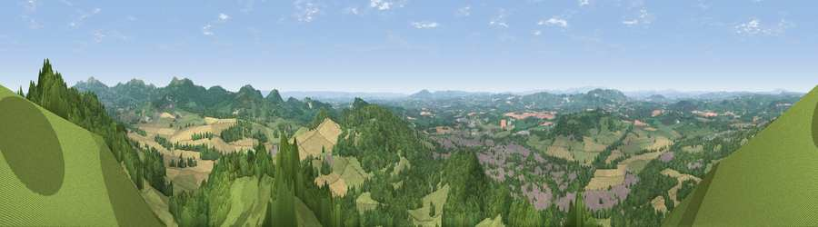

Viewpoint near Wellington Heath
#4046 in England · top 12% of its area beats it · near Wellington Heath · open accessWhere it is
The exact computed spot (SO 71675 39025). Click the marker for map links.
Public access: this spot lies on mapped open-access land (CRoW Act 2000) — you may roam here on foot. Computed from Natural England's CRoW access layer and OpenStreetMap rights of way — not the legal definitive map. Always verify locally.
The view, rendered

A 360° render of this exact spot computed from the terrain model, tree cover and land cover — summer colours, afternoon light, calibrated against photographs of famous viewpoints. Real trees, hedges and buildings will differ in detail.
The panorama
Grey silhouette: terrain skyline in each direction (720 bearings, Earth curvature and refraction included). Dashed green: skyline with trees (+15 m) and buildings (+8 m) as obstacles. Blue strip: how far the ground is visible on each bearing.
Where the view opens
Wedge length = distance to the farthest visible ground on that bearing (vegetation-aware). Rings at 10, 25 and 50 km.
What fills the view
43% woodland · 30% grassland · 21% cropland · 5% built-up
Angular shares of the visible panorama (visual magnitude), not map area. Landscape diversity 0.52 (0–1 Shannon).
Key numbers
More beautiful places nearby
The staircase of upgrades: each row has a higher view potential than everything closer. Driving times are estimates from straight-line distance, calibrated against real road routing — check an actual route before setting out.
| Place | Direction | Drive | Score |
|---|---|---|---|
| Viewpoint near Wellington Heath | N · 0 km | ~1 min | 73.6 |
| Viewpoint near Coddington | NNE · 3 km | ~7 min | 76.4 |
| Millennium Hill | E · 4 km | ~10 min | 86.9 |
| Worcestershire Beacon | NE · 8 km | ~16 min | 87.1 |
| Viewpoint near West Quantoxhead | SSW · 113 km | ~138 min | 87.9 |
| Viewpoint near West Quantoxhead | SSW · 114 km | ~138 min | 88.7 |
| Holdstone Hill | SW · 142 km | ~166 min | 90.2 |
| The Knoll | S · 152 km | ~175 min | 91.0 |
52.04889, -2.41445 · source: screening · position refined by local search. Computed location — check access rights before visiting.